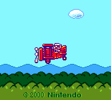
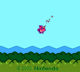
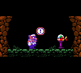
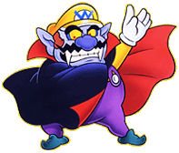

|
|
| ある晴れた日のこと。 ワリオはごきげんで飛行機にのっていました。 ところが、エンジントラブル発生！ ワリオは飛行機もろとも森の中に墜落・・・。 しかし打たれ強いワリオはその森の洞窟で 素敵なオルゴールを発見しました。 ところが残念なことに ねじをまわしても音がなりません。 「なーんだ、こわれてやがる・・・！？」 突然ワリオの姿が消え オルゴールがぽつんと残りました。 ★★★ ひょんなことから不思議なオルゴールに 閉じ込められてしまったワリオ。 そのオルゴールを司る神様は オルゴールの音とともに、 邪悪な力によって封印されたといいます。 そんなことはワリオにはどうでもいいのですが、 その封印を解いたら神様が ワリオを元の世界に戻し、 さらにお宝もプレゼントしてくれるというのです。 お宝の魅力と元の世界に戻るため、 しぶしぶ封印を解く5つの オルゴール集めに出発する ワリオですが・・・。 |
   |
|  | 要するに！ オレ様は不思議なオルゴールに 閉じ込められちゃったのだ！ ちゃんちゃらおかしくってオナラがプゥー・・・。 なーんて、笑い事ではナ〜イ！ 脱出のために 封印を解くオルゴールを探そう！ |